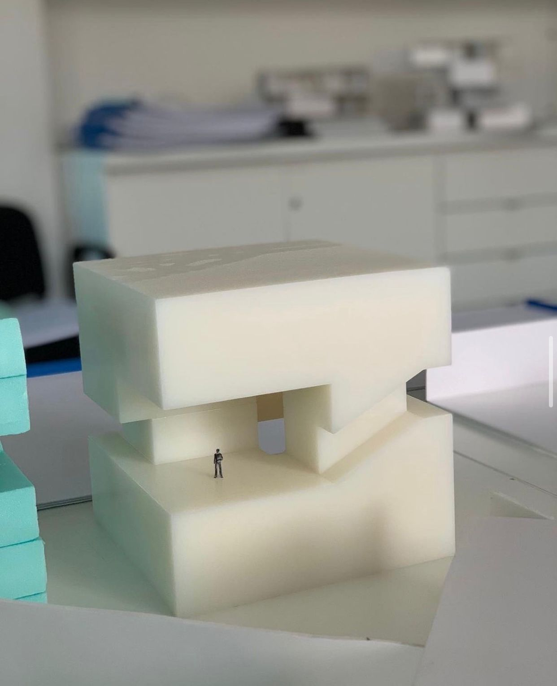
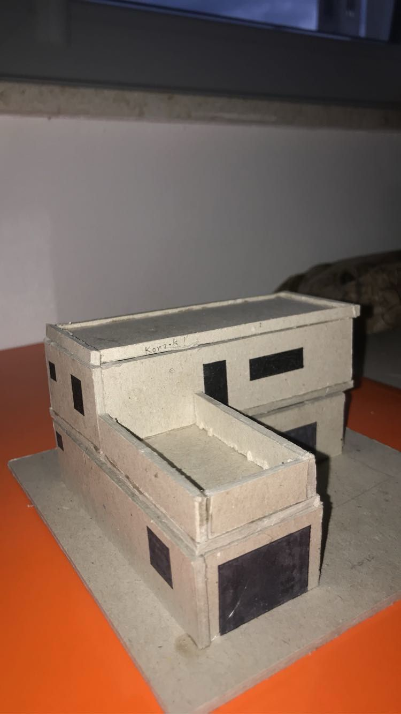
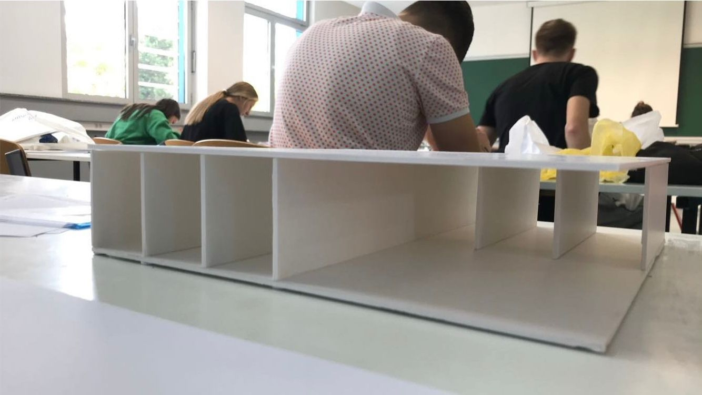

Zovem se Šima Soldo, studentica sam prve godine prijediplomskog studija na Grafičkom fakultetu, smjer tehničko-tehnološki. Završila sam Gimnaziju fra Dominika Mandića u Širokom Brijegu. Oduvijek sam se zanimala za fakultete kao što je ovaj. Na fakultetu mi je zanimljivo i bolje od očekivanog, a posebno se veselim napredovanju na fakultetu uz predmete kao što je Digitalni multimedij Nešto što možda ne znate o meni je to da sam nakon srednje škole išla prvo na Fakultet građevinarstva, arhitekture i geodezije u Mostaru, smjer Arhitektura i urbanizam. Iako se tu nisam pronašla kao što sam očekivala, imala sam nekoliko svojih radova koje ću vam priložiti u nastavku.
Makete koje sam izradila:
  Video: